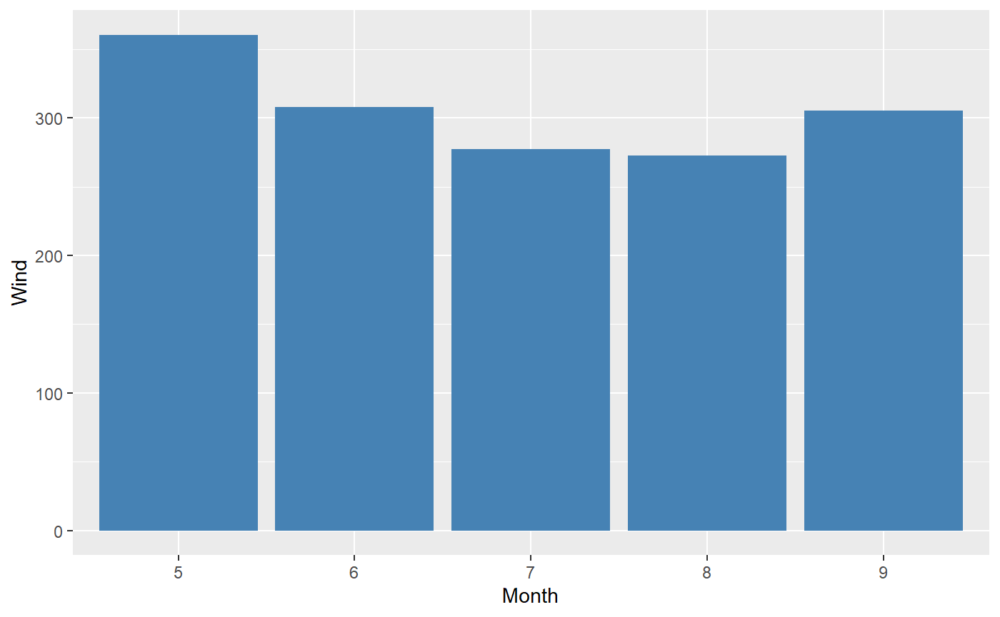

redahelper-vignette.RmdWhen conducting an exploratory data analysis, users must:
Identify outliers, and decide whether to remove them or not.
Generate plots to explore the relationships between variables.
Find correlations between variables via a correlation coefficient.
Identify and impute missing data.
The redahelper package aims to provide a more user-friendly experience through the following:
It identifies outliers in columns of a dataframe, and aims to make the outlier-removal-decision process more streamlined by providing information about the outliers and what % of the column contains outliers.
It automatically generates plots of specified variables and calculates correlation coefficients.
It identifies and imputes missing data with a user-selected method.
This document outliers redahelper’s toolkit, and provides examples on how to use them.
To explore the various functions of the redahelper package, this vignette wil luse the airquality dataset that is part of the base-R datasets. It is documented in ?airquality.
summary(airquality)
#> Ozone Solar.R Wind Temp
#> Min. : 1.00 Min. : 7.0 Min. : 1.700 Min. :56.00
#> 1st Qu.: 18.00 1st Qu.:115.8 1st Qu.: 7.400 1st Qu.:72.00
#> Median : 31.50 Median :205.0 Median : 9.700 Median :79.00
#> Mean : 42.13 Mean :185.9 Mean : 9.958 Mean :77.88
#> 3rd Qu.: 63.25 3rd Qu.:258.8 3rd Qu.:11.500 3rd Qu.:85.00
#> Max. :168.00 Max. :334.0 Max. :20.700 Max. :97.00
#> NA's :37 NA's :7
#> Month Day
#> Min. :5.000 Min. : 1.0
#> 1st Qu.:6.000 1st Qu.: 8.0
#> Median :7.000 Median :16.0
#> Mean :6.993 Mean :15.8
#> 3rd Qu.:8.000 3rd Qu.:23.0
#> Max. :9.000 Max. :31.0
#>
dim(airquality)
#> [1] 153 6
head(airquality)
#> Ozone Solar.R Wind Temp Month Day
#> 1 41 190 7.4 67 5 1
#> 2 36 118 8.0 72 5 2
#> 3 12 149 12.6 74 5 3
#> 4 18 313 11.5 62 5 4
#> 5 NA NA 14.3 56 5 5
#> 6 28 NA 14.9 66 5 6fast_outliers_id()
fast_outliers_id() allows the user to identify outliers in the data. The arguments are the dataframe (or tibble), the columns the user wants information on, the method of identifying outliers (either z-score or interquartile, and the threshold for evaluating outliers in categorical columns). The output is a dataframe summarizing the outliers in the dataframe, allowing the user to make the choice on how to proceed.
For example, finding outlier data with a method of z-score for all columns in the dataframe:
fast_outlier_id(data = airquality, cols = "ALL", method = "z-score", threshold_low_freq = 0.05)
#> # A tibble: 6 x 8
#> column_name type no_nans perc_nans outlier_method no_outliers perc_outliers
#> <chr> <chr> <int> <dbl> <list> <int> <list>
#> 1 Ozone inte~ 37 0.24 <chr [1]> 6 <dbl [1]>
#> 2 Solar.R inte~ 7 0.05 <chr [1]> 0 <dbl [1]>
#> 3 Wind nume~ 0 0 <chr [1]> 6 <dbl [1]>
#> 4 Temp inte~ 0 0 <chr [1]> 7 <dbl [1]>
#> 5 Month inte~ 0 0 <chr [1]> 0 <dbl [1]>
#> 6 Day inte~ 0 0 <chr [1]> 0 <dbl [1]>
#> # ... with 1 more variable: outlier_values <list>fast_plot()
fast_plot() allows a user to create an exploratory data analysis plot using two columns from the dataframe (or tibble) using ggplot2. The arguments are the dataframe (or tibble) of interest, the two columns of interest (x and y axes), and the type of plot to be generated, a choice from scatter, line, or bar. The output is a ggplot2 plot of the selected columns using the selected plot type. The function contains error handling to ensure the user is selecting an appropriate plot (e.g. will not allow for a bar chart when both x and y are non-numeric).
For example, plotting a scatter plot of Ozone and Temp:
Another example, a bar plot of the Wind by Month:

fast_corr()
fast_corr() allows the user to view the Pearson correlation coefficient of selected variables in the dataframe or tibble. The arguments are the dataframe (or tibble) and the columns of interest. The output is a correlation matrix displaying the various correlations.
For example, assessing the correlations among Wind, Temp, and Month:
fast_missing_impute()
fast_missing_impute() allows for a user to impute missing values from a column of the dataframe/tibble with a selected method. The arguments are the the dataframe(or tibble), the method of imputation (mean, median, mode, or remove to remove all rows with missing data in the selected columns), and the columns of interest. The output is a dataframe with the imputed values.
For example, imputing the missing values in Ozone and Solar.R with the median of the respective columns:
imputed_median <- fast_missing_impute(df = airquality, method = "median", cols = c("Ozone", "Solar.R"))
head(imputed_median)
#> Ozone Solar.R Wind Temp Month Day
#> 1 41.0 190 7.4 67 5 1
#> 2 36.0 118 8.0 72 5 2
#> 3 12.0 149 12.6 74 5 3
#> 4 18.0 313 11.5 62 5 4
#> 5 31.5 205 14.3 56 5 5
#> 6 28.0 205 14.9 66 5 6Another example, using the same columns, but now removing the rows in Ozone and Solar.R with missing data:
imputed_remove <- fast_missing_impute(df = airquality, method = "remove", cols = c("Ozone", "Solar.R"))
head(imputed_remove)
#> Ozone Solar.R Wind Temp Month Day
#> 1 41 190 7.4 67 5 1
#> 2 36 118 8.0 72 5 2
#> 3 12 149 12.6 74 5 3
#> 4 18 313 11.5 62 5 4
#> 7 23 299 8.6 65 5 7
#> 8 19 99 13.8 59 5 8Compared to existing options, redahelper:
Allows for a more streamlined user experience as many common exploratory data analysis issues can be taken care of with one line of code.
Does not modify the existing dataframe to allow the user to make decisions about whether they would like to make use of the output.
Is well documented and includes considerable error handling.